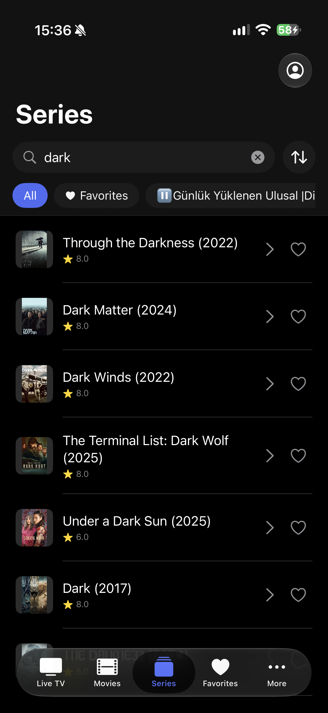

Toevoegen
Voeg een Xtream Codes-login of een M3U- / M3U8-link toe
Log in met Apple om favorieten en geschiedenis op je apparaten te synchroniseren

Xtream, EPG, zonder ads
M3U-speler
Een eenvoudige speler voor je eigen M3U- of Xtream Codes-lijst.
Live tv, films en series. Geen advertenties.
Favorieten, downloads en hervatten.
Easytv Play is een mediaspeler. De app levert geen zenders, abonnementen of content. Voeg alleen een bron toe die je mag bekijken. EPG, ondertitels en beeldkwaliteit hangen af van je aanbieder.
Geen advertenties. Geen tracking door derden.

JOUW LIJST
Easytv Play levert geen zenders, abonnementen of content. Voeg alleen een bron toe die je mag gebruiken.
Favorieten, downloads, EPG, hervatten, ondertitels, Face ID-slot en inloggen met Apple.
Toevoegen
Log in met Apple om favorieten en geschiedenis op je apparaten te synchroniseren
Live tv
Zoek in je bibliotheek en sla favorieten op
Gids

Hervatten

Downloads

De app levert geen zenders, abonnementen of content. Voeg alleen een bron toe die je mag bekijken. EPG, ondertitels en beeldkwaliteit hangen af van je aanbieder.
Geen advertenties. Geen tracking door derden.
Schermen





Licenties
Deze app gebruikt de volgende open-sourcecomponenten.
© VideoLAN en de auteurs van VLCKit.
Gelicentieerd onder de GNU Lesser General Public License, versie 2.1 of later (LGPL-2.1-or-later). Het framework is dynamisch gekoppeld en mag door de gebruiker worden vervangen volgens de LGPL.
Easytv Play is een mediaspeler. De app levert geen zenders, abonnementen of content. Voeg alleen een bron toe die je mag bekijken. EPG, ondertitels en beeldkwaliteit hangen af van je aanbieder.
Voeg een Xtream Codes-login of een M3U- / M3U8-link toe
Geen advertenties. Geen tracking door derden.
Log in met Apple om favorieten en geschiedenis op je apparaten te synchroniseren. De details staan in het privacybeleid.
Support voor Easytv Play. Schrijf naar hello@soneraltin.com.